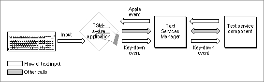

Legacy Document
Important: The information in this document is obsolete and should not be used for new development.
Important: The information in this document is obsolete and should not be used for new development.


The Text Services Environment
The text services environment is a structure for the efficient flow of information between client applications and text service components. It allows client applications to obtain text services without having to know anything about the specific text service components performing them. Likewise, it allows text service components to perform their services without having to know anything about the specific client applications making the requests.The text services environment consists of a client application, a text service component, the Apple Event Manager, the Component Manager, and the Text Services Manager. For a client application to work within the text services environment, it must
For a text service component to work within the text services environment, it must
- call the routines of the Text Services Manager application interface described under "Text Services Manager Routines for Client Applications" on page 7-48. By using these application-level routines, a client application becomes TSM-aware and communicates with other parts of the environment.
- implement handlers for the Apple events described under "Apple Event Handlers Supplied by Client Applications" on page 7-65. A client application receives text and other information from a text service component through Apple events.
Figure 7-4 shows some of the flow of information in the text services environment when a TSM-aware application uses a text service component. Application-level calls that an application makes to the Text Services Manager application interface are converted to component-level calls that are passed to an individual text service component. The text service component in turn makes calls to the Text Services Manager component interface; those calls are converted to Apple events that are passed on to the application.
- register as a component with the Component Manager
- call the routines of the Text Services Manager component interface described under "Text Services Manager Routines for Components" on page 7-77
- implement the component-level text service component routines described under "Text Service Component Routines" on page 7-84
The Text Services Manager controls the overall process by keeping track of which text service components are available to a given application and which application is to receive data from a given text service component. The Text Services Manager communicates with text service components through the Component Manager; applications that have special needs can likewise communicate directly with individual text service components by calling the text service component routines.
Figure 7-4 How a TSM-aware client application uses the Text Services Manager

- IMPORTANT
- The event-handling structure of the Text Services Manager requires that the low-memory global variable
SEvtEnbbe nonzero. If your application setsSEvtEnbto 0 to force the Event Manager functionSystemEventto always return a value ofFALSE, text service components do not function correctly. See Inside Macintosh: Macintosh Toolbox Essentials for more information on theSystemEventfunction and theSEvtEnbglobal variable.